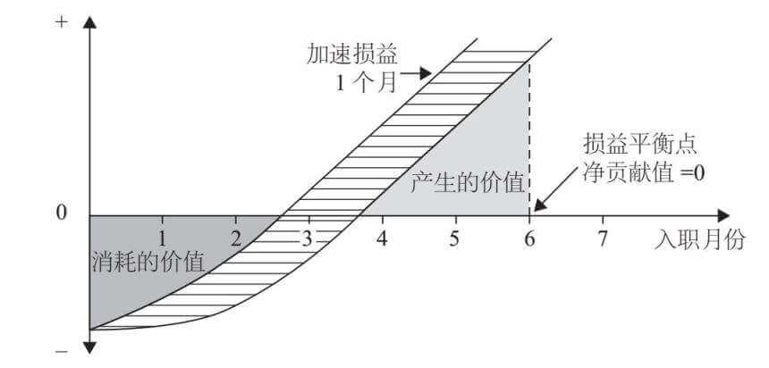
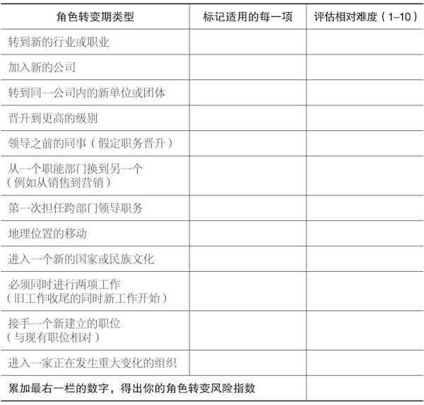
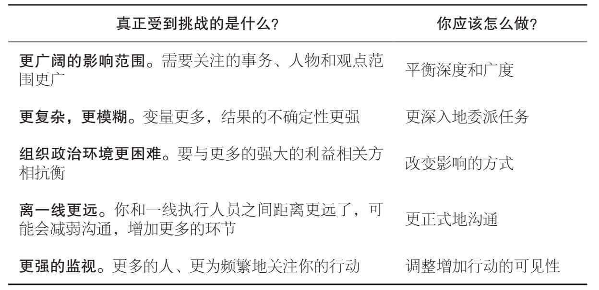
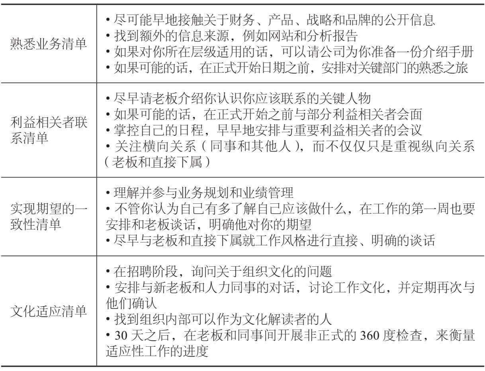
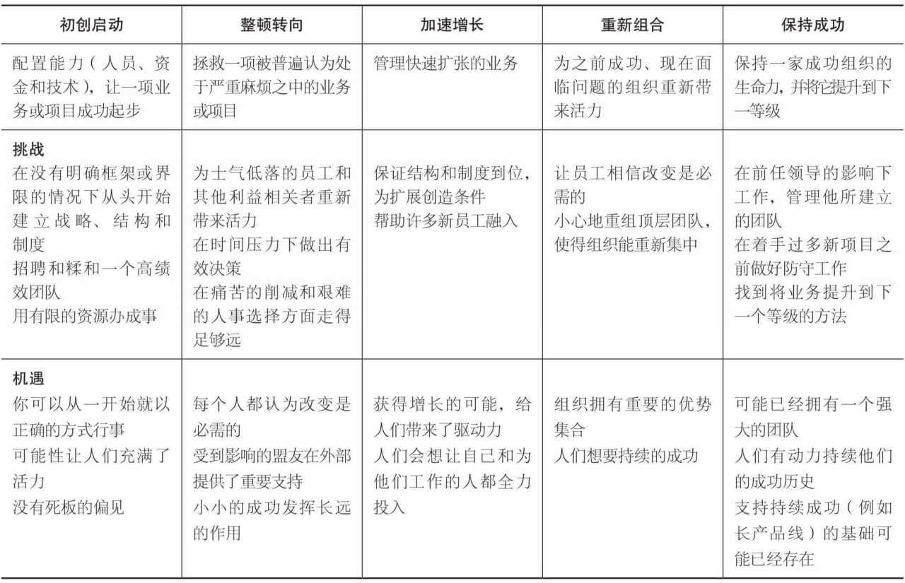

《创始人：新管理者如何度过第一个 90 天》读书笔记（第 1-4 章）
从 IC 到管理者，针对这个角色转变过程，这本书能够给予的一些指导性意见。当然，书中提到的“新管理者”实际上泛指从一个旧环境进入到新环境的管理者，其个人的职责转换受到外界环境变化的影响。
引言 - 第一个90天
- 损益平衡点：

- 到达损益平衡点的平均时间是 6.2 个月；
- 到达损益平衡点时，管理者将成为所在组织的净贡献者。
- 常见的角色转变期陷阱：
- 固守你所擅长的事情；
- 深受“必须行动”思维所害：即操之过急地想要在组织身上打上自己的烙印；
- 设立不现实的期望：没有针对将要开展的工作与他人进行过沟通，也没有建立清晰、可实现的具体目标；
- 试图做得太多：在所有方向上都很匆忙，启动了多个项目，希望其中某些能够成功（资源过于分散）；
- 带着“正确”答案前来：在来之前已经打定主意，或太快就决定了问题在哪儿，应该怎样解决；
- 忽视横向关系：过于关注纵向关系，而没有处理好与同级和其他利益相关者的横向关系；
- 专注于错误类型的学习：花费过多时间专注于学习业务的技术性内容，而没有足够精力了解新岗位所处的文化和政治环境。
- 领导力最终就是影响力和作用力。为了取得成功，你需要调动所在组织中其他人的力量。
- 角色转变期的基本任务：
- 自我准备：在心理上与前一份工作告别，做好接手下一职务的准备；
- 加速学习：在新组织中，要尽可能快地提升学习曲线。理解它的市场、产品、技术、制度、结构，以及文化和政治环境；
- 根据实际情况调整策略：不同的情境需要对于角色转变期的规划和执行做出调整；
- 保障早期成功：早期的成功能够建立信誉，创造良好的势头；
- 通过沟通取得成功：向上沟通，话题涉及情境、期望、工作风格、资源和个人发展；
- 实现一致：你要弄清组织的战略方向是否正确，使其结构和策略一致，并且发展实现你的战略意图需要的流程和技能；
- 建设你的团队：如果接手了一个团队，你需要评估、匹配和调动团队的成员；
- 创立同盟：无论是内部还是外部的同盟，对你实现目标都是必需的；
- 保持平衡：在角色转变期的个人和职业动乱中，你必须努力保持你的平衡，并且保留做出正确判断的能力；
- 加速每一个人的转变：你需要帮助所在组织里的所有人，加速他们的角色转变。
- 角色转变风险评估：

第一章 - 自我准备
- 内部职务晋升的核心挑战：

- 入职新公司的核心挑战：
- 加入新公司的领导者通常是在横向移动：他们被聘用来开展他们在其他地方做得很成功的工作；
- 从外部进入内部的挑战比从内部晋升的挑战“困难得多”；
- 四个重点：
- 熟悉业务：跳出小框架；
- 联系利益相关者：注意横向关系的建立；
- 实现期望的一致性：新聘用来的领导者很容易认为他们拥有比实际更多的自主权；
- 文化适应：符号和语言 -> 行为规范和模式 -> 基本假设和价值观。
- 入职清单：

- 自我准备：
- 建立一个明确的分界点：放下之前的工作，融入新工作的环境；
- 评估你的弱点：
| 技术 | 政治 | 文化 | 总计 | |
|---|---|---|---|---|
| 人力资源 | 评估和奖励制度设计 - 6 | 员工士气 - 8 | 公平/公正 - 8 | 22 |
| 财务 | 财务风险管理 - 6 | 预算制定 - 7 | 成本意识 - 6 | 19 |
| 市场营销 | 产品定位 - 8 | 与客户的关系 - 8 | 组织客户关注点 - 7 | 23 |
| 运营 | 产品或服务质量 - 9 | 与分销商和供应商关系 - 6 | 持续的改进 - 8 | 23 |
| 研发 | 项目管理系统 - 8 | 研发、营销和运营部分的关系 - 7 | 跨部门合作 - 7 | 22 |
| 总计 | 37 | 36 | 36 |
- 当心你的优势：“对于手里拿着锤子的人来说，什么东西看着都像是钉子”；
- 重新建立网络：为一个新角色做好自我准备需要主动地重新建构你的建议和咨询网络；
- 当心那些想要拖你后腿的人：让其他人接受你的转变。所以如果你判定这些怀疑的人（如之前的 peer）将永远不会接受你的新角色和由此导致的情况，那么你必须找到办法，尽快将他们移出你的组织；
- 获得帮助：组织都有项目和流程来帮助领导者成功渡过角色转变期。
- 问题清单：
- 如果你获得了晋升，你在平衡广度和深度、委派任务、产生影响、进行沟通和展现领导力方面需要做到哪些？
- 如果你要加入一家新的组织，你将会怎样熟悉业务，认识并与重要利益相关方建立联系，明确他人对你的期望，并适应新的文化？在适应新环境与尝试改变之间怎样才是恰当的平衡？
- 是什么使你在目前的职业生涯里取得了成功？仅仅依靠这些优势你还能够在新岗位上继续成功吗？如果不能，你需要开发的关键技能有哪些？
- 你的新工作中有没有这样一些对于成功来说非常重要的方面，但是你却不想去关注？如果有的话，为什么？你要怎样弥补你可能的盲点？
- 怎样才能保证你在心理上做好角色转变的准备？你可以从谁那里获得建议和咨询？还有其他什么活动能够在这方面为你提供帮助？
第二章 - 加速学习
- 关注理解组织历史的重要性，要问的一个基本的问题就是：“我们是怎么走到现在这一步的？”。
- 管理早期需要拟定的问题清单：
- 关于过去的问题：
- 业绩：
- 组织过去业绩如何？组织里的人如何看到它的业绩？
- 目标是怎样设定的？这些目标是不足还是过于野心勃勃？
- 是否使用了内部或是外部的参考标准？
- 采取了哪些措施？哪些行为是他们鼓励或阻止的？
- 如果没有达到目标会发生什么？
- 根本原因：
- 如果业绩非常好，可能的原因是什么？
- 战略、结构、制度、人才基础、文化和政治环境的相对贡献是什么？
- 如果业绩不佳，原因是什么？重要问题是存在于组织的战略中、结构中、技术能力中、文化中还是政治环境中？
- 改变的历史：
- 采取过哪些行动来改变这个组织？
- 效果如何？
- 哪些人对于塑造这个组织非常重要？
- 业绩：
- 关于现在的问题：
- 愿景和战略：
- 公开的愿景和战略是什么？
- 组织是否真的在追求这样的战略？如果不是，为什么？如果是，这样的战略是否能将组织带往它的目的地呢？
- 人：
- 哪些人有能力，哪些人没有？
- 哪些人值得信赖，哪些人不值得？
- 哪些人有影响力，为什么？
- 流程：
- 关键的流程有哪些？
- 它们在质量、可靠性和时效性方面的表现是否可以接受？如果不能，为什么？
- 地雷阵：
- 哪些潜伏的意外可能爆炸，并使你脱离轨道？
- 你必须避免哪些可能的破坏性文化或政治失误？（注意影子组织，也就是在正式组织结构的阴影下存在的一套非正式流程和同盟关系）
- 早期胜利：
- 你可以在哪些领域（人、关系、流程或产品）取得一些早期胜利？
- 愿景和战略：
- 关于未来的问题：
- 挑战和机遇：
- 在未来的一年中，组织在哪些领域最有可能遭遇严峻挑战？为了应对这些挑战可以做哪些准备？
- 尚未被利用的、有发展前途的机遇有哪些？需要做什么工作来实现这些潜在机遇？
- 障碍和资源：
- 想要做出必需的改变所面临的最艰难的障碍是什么？是技术、文化还是政治方面的？
- 是否有可以利用的英才中心或者其他高质量的资源？
- 还需要开发或取得哪些新的能力？
- 文化：
- 文化的哪些要素需要保留？
- 哪些要素需要改变？
- 挑战和机遇：
- 确定获得洞察力的最佳来源：
- 外部信息来源：客户、供应商、分销商、外部分析师；
- 内部信息来源：一线研发和运营人员、销售和采购、员工、综合人士（那些协调或者推动跨部门互动的员工）、资深老员工；
- 其他：网络上的资源，如：组织的背景信息和分析、重点人物传记、以及其他公开信息。
- 采用结构化学习方法：
- 在与下属的 1on1 中参照同样的台本，即同样的问询流程。这种方法是强有力的，因为这样你得到的回应是可以互相比较的；
- 当诊断一个新组织时，与下属的 1on1 可以询问这样几个问题：
- 组织当前面临（或者将要面临）的最大挑战是什么？
- 组织为什么面临（或者将要面临）这样的挑战？
- 组织成长最有希望的机遇是什么？
- 组织想要充分利用这些机遇和潜力需要什么条件？
- 如果你是我，你会把注意力放在哪里？
- 结构化学习方法：
| 方法 | 用处 | 适用对象 |
|---|---|---|
| 组织风气和员工满意度调查 | 了解文化和士气，要考虑针对员工的看法进行常规调查。 | 如果分析材料专门针对你的单位或团体公开，则适用于所有层级的管理者。有用性取决于收集和分析的间隔性。 |
| 与组织或单位的切片部分进行结构化访谈 | 明确关于基于和问题的共同意见及分歧。可以采访不同部门、同一层级的员工，或者穿过不同层级。不管哪个维度，都要询问所有人相同的问题，然后在他们的回应中寻找相似点和差异点。 | 对于领导着来自不同部门背景的团队最为有用。如果单位正在经历严重的问题，也可能在更低层级发挥作用。 |
| 关注群体 | 调查那些困扰重点员工团队的问题，比如一线生产或服务员工中的士气问题。将共同工作的人聚在一起会让你看到他们是怎样互动的，并发现谁是其中的领导者。发起讨论可以带来更深入的洞察。 | 对于人员基本履行类似智能的大型团队管理者最为有用。有利于高级管理者快速洞察关于重要员工支持团队的看法。 |
| 对过往重要决策的分析 | 阐释决策模式和权力、影响力来源。选择一个最近的重要决策，研究它是如何做出的。在每个阶段是谁产生了影响力？与参与其中的人对话，调查他们的观点，并关注哪些信息得到了传达而哪些没有。 | 对于业务单位或项目团体的高级别管理者最为有用。 |
| 过程分析 | 检查不同部门或职能单位间的互动，评估流程的效率。选择一个重要流程，比如将产品交付给客户或分销商的流程，指派一个跨部门团队去跟踪这一流程，确定其中的瓶颈和问题。 | 对于必须整合多个职能部门专家工作的单位或团队管理者最为有用。对低级别管理者来说，可以作为理解他们团队如何融入更大流程中的一种方法。 |
| 工厂和市场之旅 | 从离产品最近的人那里了解第一手信息，使你非正式地接触到生产人员，并了解他们的诉求。与销售和生产员工会面帮助你评估技术能力。市场之旅可以将你介绍给客户，客户的评价可能显现出问题和机遇。 | 对业务单位的管理者最为有用。 |
| 试点项目 | 深入洞察技术能力、文化和政治环境。尽管这些洞察力可能并不是试点项目的重要目的，但你仍然可以从组织或你的团队如何回应你的试点项目中了解到很多。 | 对所有层级的管理者都适用。随着你在组织中层级的上升，试点项目和它们的影响也会随之扩大。 |
- 学习计划：
- 学习计划确定的是你将怎样学习，它是一个周期性的学习流程，通过这个流程，你收集、分析和提炼信息，然后发展并检验假设，以此渐进地深化对于组织的理解；
- 一个基本模板：
- 入职前：
- 找到关于组织战略、结构、表现和人员的尽可能多的信息；
- 寻找对于组织表现的外部评估。你将会了解到知识渊博、公正无偏见的人是怎样看待它的。如果你是处于较低层级的管理者，你可以与组织的供应商或客户交流；
- 寻找对于组织非常了解的外部观察员，包括前员工、最近退休的人员和与组织进行过业务交易的人员。向这些人提出关于组织历史、政治和文化的开放性问题；
- 如果可能的话，与你的前任交流；
- 与你的新上司交流；
- 在你开始了解这个组织的时候，写下你的第一印象，以及后来的一些假设；
- 编制一套问题，指导入职后开展结构性的调查。
- 入职后不久：
- 检查具体的运营计划、业绩数据和人员数据；
- 与直接下属一对一见面，询问他们你已经拟定的问题。你将了解你的下属，并发现观点的一致性和分歧性；
- 评估关键交界面的工作开展情况。你将会听取销售人员、采购代理、客户服务代表和其他人对于你所在组织和外部支持者打交道的观感。你还会了解到一些人认为存在而其他人并未发现的问题；
- 测试自上而下的战略一致性。询问最顶层的人公司的愿景和战略是什么。然后调查这样的信念和想法在组织层级里到底渗透了多深、多远。你将会了解到前任领导者在推动愿景和战略向下传播方面所做的工作如何；
- 自下而上测试对于挑战和机遇的意识。从询问一线员工如何看待公司的挑战和机遇开始，然后从下往上调查，你将会了解顶层领导到底把组织的整体脉搏把握得有多好；
- 更新你的问题和假设；
- 与你的上司会面，讨论你的假设和发现。
- 第一个月末：
- 召集你的团队，向他们反馈你的初步发现。你将会引出对你所做评估的肯定或是挑战，也将更多了解你的团队和团队的氛围；
- 现在从外向内分析关键交界面。你将会了解到外部人士（供应商、客户、分销商和其他人）如何看待你的组织及其优缺点；
- 分析几个关键流程。召集责任团队的代表来确定并评估你所选择的流程。你将会了解到生产力、质量和可靠性方面的信息；
- 与关键的综合人士会面。你将会了解在职能的交界面工作是如何开展的，有哪些问题是他们发现了但是其他人不以为然的。寻找那些天然的“历史学家”，他们可以帮助你理解组织的历史、文化和政治环境，他们也可能成为你的同盟者或影响者；
- 更新你的问题和假设；
- 与你的上司再次会面，讨论你的观察结果。
- 入职前：
第三章 - 根据实际情境调整策略
- STARS 模型：领导者常常会发现自己身处其中的五个常见业务情境。

- 初创启动（Start-up）；
- 整顿转向（Turnaround）；
- 加速增长（Accelerated Growth）；
- 重新组合（Realignment）；
- 保持成功（Sustaining Success）。
- 整顿转向 V.S. 重新组合：“英雄” V.S. “管家”。
| 整顿转向 | 重新组合 | |
|---|---|---|
| 1. 组织学习：判断你最需要学习和了解的是什么，应该从谁那里学习，怎样才能最好地学习。 | 关注于技术性的学习（战略、市场、技术等）。做好快速行动的准备。 | 关注于文化和政治环境的学习；做好谨慎行动的准备。 |
| 2. 明确战略意图：开发并传达一个具有吸引力的愿景，明确组织将来发展的方向。概述为了实现这一愿景所需的清晰战略。 | 调整非核心业务。 | 打磨和利用现有能力；激发创新。 |
| 3. 建立 A 级优先事务：确定一些极其重要的目标，并不懈地追求它们。思考你想在新岗位入职 1 年时取得的成绩。 | 快速、大胆地行动；关注于战略和结构。 | 三思而行；关注于系统、技能和文化。 |
| 4. 建立领导团队：评估你所继承的团队。敏捷地行动以做出必要改变；找到引入外来人才和提拔内部人才的最优平衡。 | 在最高层大扫除；招聘外部人才。 | 做出一些重要改变；从内部提拔具有潜力的员工。 |
| 5. 保障早期成功：彻底想清楚你想要怎样“出现”在新组织中。找到建立个人信誉的方法，并激活普通员工。 | 将组织的心态从绝望转为希望。 | 将组织的心态从拒绝承认转为意识到问题所在。 |
| 6. 创立支持性同盟：明确组织实际是如何开展工作，以及哪些人拥有影响力。进行重要的结盟以支持你的举措。 | 获得上司和其他利益相关者的支持，以投资必需的资源。 | 与同事及下属建立同盟，保障更好的执行力。 |
- “初创启动”、“整顿转向”是显著的、容易衡量的个人成就；而评价“重新组合”与“维持成功”情境下的成与败就要麻烦多了。
第四章 - 通过沟通取得成功
- 沟通的基本注意事项：
- 不该做的事项：
- 不要离上司太远；
- 不要让坏消息吓到你的上司；
- 不要只是带着问题去找你的上司；
- 不要汇报流水账；
- 不要期望你的上司会改变。
- 该做的事项：
- 提早并经常明确期望；
- 为建立良好关系承担 100% 的责任；
- 沟通诊断和行动计划的时间期限；
- 在上司认为重要的领域追求早期成功；
- 从你的上司尊敬的人那里获得好的评价。
- 和新上司的五论对话：也适用于你与直接下属之间的对话。
- 关于情境的对话：达成关于你们所面临的业务情境，及其相关的挑战和机遇的共识；
| 情境 | 上司的典型角色 |
|---|---|
| 初创启动（Start-up） | 帮助快速获得所需资源：清晰、可衡量的目标；在战略关键点上的指导；帮助下属保持专注。 |
| 整顿转向（Turnaround） | 与“初创启动”相同，再加上：在艰难的人员决定上提供支持；在改变或修正外部形象上提供自持；帮助深入、快速地削减。 |
| 加速增长（Accelerated Growth） | 与“初创启动”相同，再加上：对获取投资以保证以恰当方式获得合适速度的增长提供支持；帮助建立新制度和新结构。 |
| 重新组合（Realignment） | 与“初创启动”相同，再加上：帮助做出改变，特别当你是外来者时。 |
| 保持成功（Sustaining Success） | 与“初创启动”相同，再加上：持续的现实检验 — 这是一个“维持成功”的情境，还是“重新组合”情境？为良好的防御和避免伤害业务的失误提供支持；帮助找到方法，将业务带到下一个台阶。 |
- 关于期望的对话：让你和上司一起明确并匹配关于未来的期望；
- 根据实际情境调整期望值；
- 对你的上司来说，在重要的领域追求初步的成功；
- 确定不宜触碰的事务；
- 教育你的上司（事实情况）；
- 少些许诺，多些成果；
- 确认，确认，确认（期望值）。
- 关于资源的对话：让你和上司一起明确并匹配关于未来的期望。最好的办法是尽早地、尽可能多地把问题摆上台面。尝试用清单式的办法：展示出不同等级资源投入的成本和收益（ROI）。几个沟通原则：
- 关注于根本利益；
- 寻求互利共赢的交易；
- 将资源与成果联系起来。
- 关于工作风格的对话：目标是要确定你和你的上司怎样才能够最好地、持续地合作；
- 确定你上司的风格；
- 量出你“盒子”的规模：你的上司对自己在决策中的参与有一个舒适区。将这个区域当作你将会运作的决策“盒子”的界限；
- 适应你上司的风格；
- 把困难的问题摆在台面上：将你们早期的谈话关注在目标和结果上，而不是你实现它们的方法上（过程不同，但目标一致）。
- 关于个人发展的对话：向你的上司请求反馈和帮助。取得成功需要一套不同的技能和态度，要训练自己愿意向走在你前面的人学习。不要将你的关注点局限在硬性技能上。你升得越高，重要的文化和政治判断、沟通、建立联盟和争端管理方面的软技能就会变得越重要。
- 90 天计划：创立一个 90 天计划并获得上司的支持。将90天分成以30天为单位的3个时间段，在每个时间段末尾，你将和你的上司一起召开工作总结会。
- 第一个 30 天计划致力于学习和建立个人信誉。成果会是对于情境的诊断、对于重点要务的确定；
- 第二个 30 天计划应当提出你将在哪些领域怎样追求早期的成功；
- 第三个 30 天计划确定实现重点举措的必要资源、充实你对战略和结构的最初评估，以及展现对于你的团队的一些早期评估。